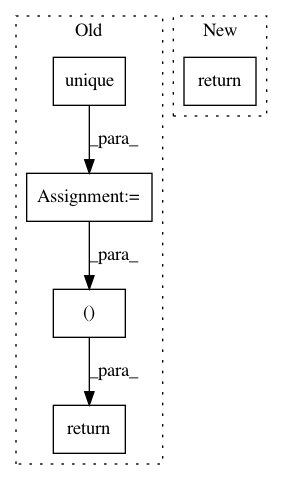

433cd5e10c9af9e74f97a2de2abb3142c36bb6a0,eat/factor.py,,factor,#Any#,3
Before Change
Site-based data being factored out
sites = np.unique(np.append(bb["ref"], bb["rem"]))
types = [("site", sites.dtype), ("value", "f8")]
sb = np.array([(s, 0) for s in sites], dtype=types)
return sb
After Change
sites = list(set(bb["ref"]) | set(bb["rem"]))
sol = [0.0] * len(sites)
return {s:sol[i] for i, s in enumerate(sites)}
In pattern: SUPERPATTERN
Frequency: 3
Non-data size: 5
Instances
Project Name: sao-eht/eat
Commit Name: 433cd5e10c9af9e74f97a2de2abb3142c36bb6a0
Time: 2017-07-04
Author: ckchan@cfa.harvard.edu
File Name: eat/factor.py
Class Name:
Method Name: factor
Project Name: flow-project/flow
Commit Name: 39fe260e63aaafeceb2d8c982eeebcb8faf582a6
Time: 2020-06-13
Author: jonny5@berkeley.edu
File Name: flow/visualize/time_space_diagram.py
Class Name:
Method Name: get_time_space_data
Project Name: rusty1s/pytorch_geometric
Commit Name: 3735f4b48f52f7703944f36284b9e9ee3d1e8e5f
Time: 2020-10-27
Author: matthias.fey@tu-dortmund.de
File Name: torch_geometric/nn/models/tgn.py
Class Name: MeanAggregator
Method Name: forward